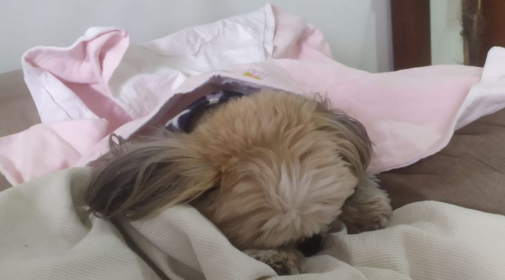
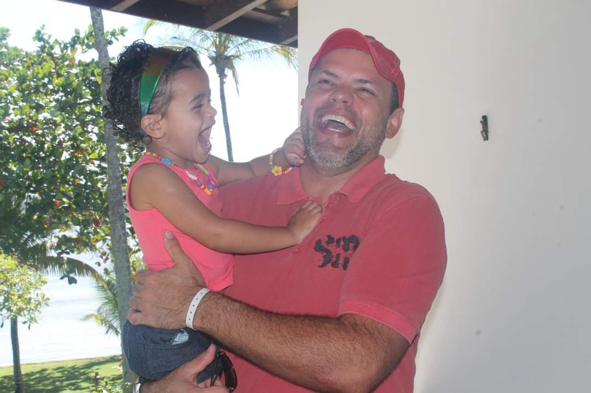
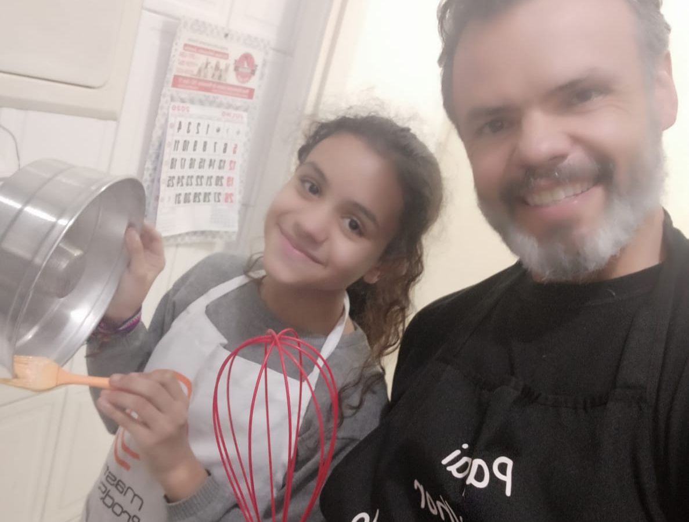
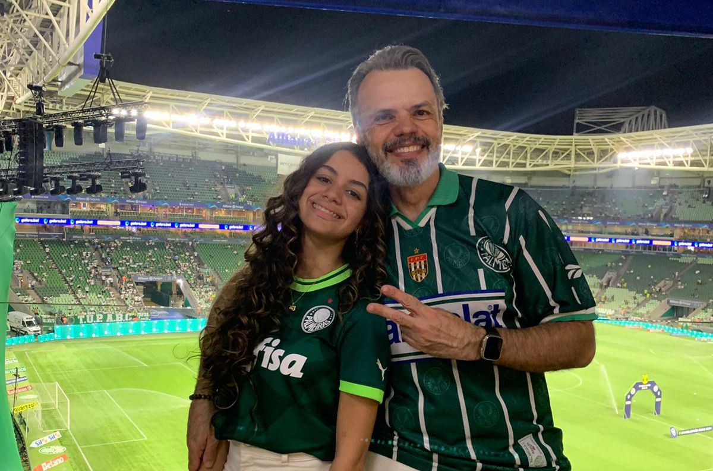

Clique para abrir seu presente
Nem tudo cabe em palavras, então tentei traduzir (para código) um pouquinho do que você representa pra mim 🤍

Aqui está ele, Snoopy (Pepele para os íntimos). Por conta da idade, ele não tem mais uma grande porcentagem dos seus sentidos. Mas, olhando por outro lado, a verdade é que ele tem tudo: amor, cuidado e um lugar seguro. Porque Painho, você sempre foi assim: Gosta de cuidar de todo mundo, até dos que falam só com o olhar. Nosso companheirinho sente há 16 anos, mesmo em silêncio, o quanto é amado.

Porto Seguro, 2013: Eu nem lembro do que comecei a rir, mas, pensando como a criancinha de 3 anos que está nessa foto, tenho certeza que era só porque você tava do meu lado, só rindo junto, sem nem ter motivo certo. É essa a memória que eu SEMPRE vou carregar, já que você reforça ela todos os dias: como você faz questão de ser presente na minha vida. Essas viagens eram especiais, mas o que acrescentava um arzinho ainda mais incrível era você. Tem lembrança que não precisa de foto, mas essa ganhou uma. E ainda bem.

Painho na cozinha é cena comum por aqui. Não é só porque porque você faz tudo com capricho, mas sei que também é porque você gosta de me ver feliz e satisfeita. Fazer um bolo, um franguinho, strognoff.. Mesmo não verbalizando, saiba que é impossível não notar cada gesto de cuidado. Mesmo que a rotina corrida faça não pensarmos nisso com frequência, mas é um dos seus jeitos de dizer “tô aqui”, mesmo quando não fala nada. E Painho, pode ter certeza, eu sinto isso. No sabor, no cheiro e na sua presença ali.

Com o tempo, as conversas mudaram, mas o afeto e principalmente a confinça que eu tenho em você, só cresceu. Hoje eu entendo mais do que antes. Graças a você, que sempre me ensinou e me ensina com muita cautela sobre as coisas que o mundo me apresentou e que o tempo ainda vai me apresentar. Nem sempre a gente fala muito, mas a presença e a preocupação falam tudo. Tem cuidado no seu silêncio, tem amor no jeito que você cuida. E mesmo com os anos passando, tem coisas que nunca mudam… e ainda bem. Te amo muito painho 🤍
Painho,
É difícil escrever tudo o que eu sinto por você. Mas é mais difícil ainda deixar passar essa data sem tentar, pelo menos, colocar em palavras o tanto que você significa pra mim.
Ao longo dos anos, eu percebi que o amor verdadeiro não grita, não precisa de grandes cenas. Ele mora nas pequenas atitudes. No jeito como você cuida de tudo ao redor, como presta atenção em detalhes que muitas vezes a gente nem percebe. Mora no silêncio cheio de presença, nas mãos que oferecem apoio sem pedir nada em troca.
Você sempre esteve ali. Às vezes com palavras, às vezes só com um olhar, um gesto, uma comida feita com carinho depois de um dia difícil. E, mesmo que nem sempre a gente diga em voz alta, eu vejo. E sinto. Cada uma dessas coisas foi, e ainda é, uma forma de dizer “eu me importo”. E isso nunca passou despercebido por mim.
A gente vai crescendo, as rotinas mudam, os papéis se transformam… mas algumas verdades continuam firmes. Como a confiança que eu tenho em você, e a segurança de saber que, mesmo nos momentos mais complicados, você é um porto seguro. Uma dessas pessoas raras que fazem a gente respirar fundo e pensar: “vai ficar tudo bem”.
Hoje, olhando pra trás e pra frente ao mesmo tempo, eu só posso agradecer. Por cada lembrança bonita que construímos. Por cada forma de amor que você me ensinou, mesmo sem falar. Por ser esse exemplo constante de cuidado, de firmeza e de afeto.
Obrigada por tudo, Painho. Por ser você.
Feliz Dia dos Pais 🤍
Com amor,
Bia